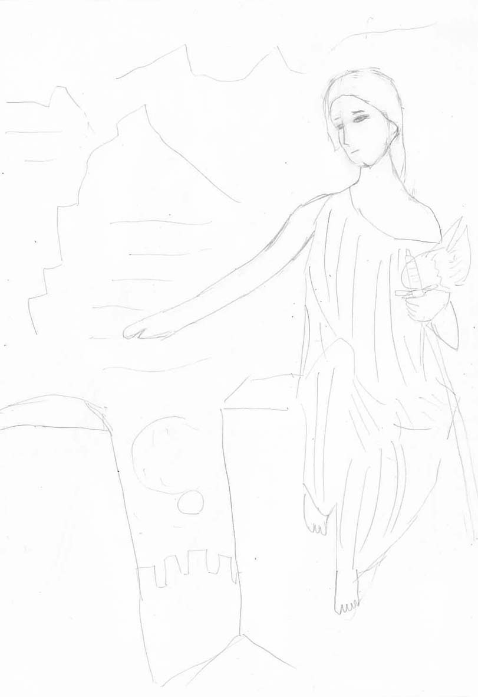
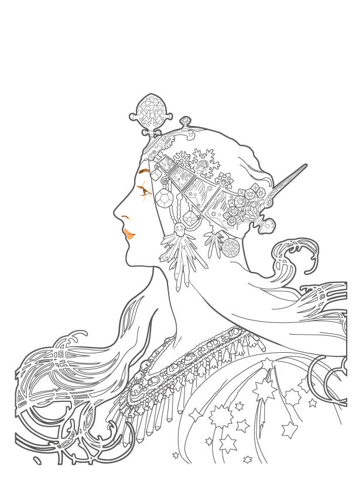
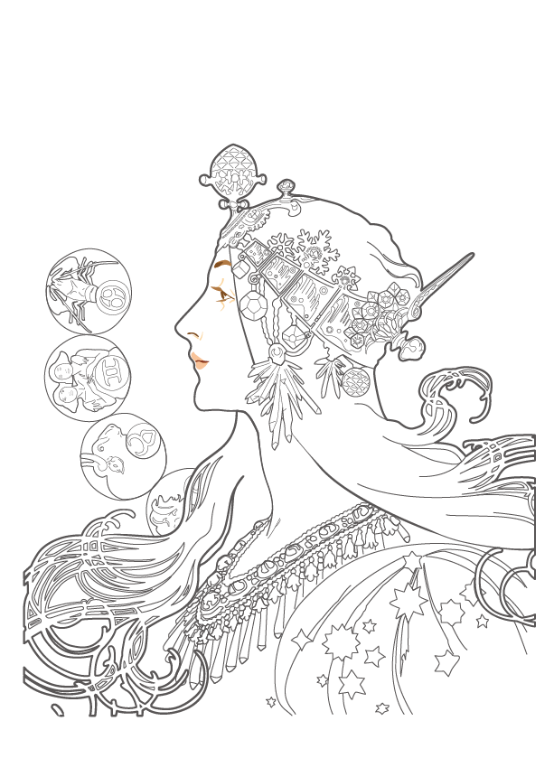

模写の世界観です。
以下の内容は、僕自身がデザインの作業所で見習いとして学び経験したことに基づきます。書いている当時がとても未熟であったため、誤解や勘違いが多くあります。
作業所の同僚やスタッフにも多くのことを教えていただきました。
実際に僕が制作したデザイン作品はイラスト・作品ギャラリーにあります。
僕は今、ダヴィンチの最後の晩餐をトレースしていますが、模写のコツは「グリッドを引くこと」ではないかと思います。
今のところ、僕はAdobe Illustratorを使って、最後の晩餐をトレースしていますが、ダヴィンチの絵画は、顔の表情、目つき、きらびやかな服、手や足の美しさ、何人ものキャラクターが居ること、室内のパース、背景の風景など、「絵画習得のための多くの要素がつまっている」作品だと思います。
街中にはたくさんのデッサンやパースやキャラクターデザインの本があふれていますが、僕は一冊買えば十分だと思います。それは、どの本にも書いてあることがあまり変わらないからです。自分の手で絵画を模写した方が、技術の習得には早道だと思います。まずはダヴィンチから、グリッドを引いて始めてみてはいかがでしょうか。
僕は、最近Illustratorの仕事にも慣れてきて、綺麗なパスが引けるようになってきました。ただ、Illustratorで模写をするのには限界があり、特にダヴィンチのような油絵では、線と塗りだけの平面的なテクスチャでは表現できないところもあります。上手くやる方法もあるかもしれませんが、紙に描いて模写することも手です。まずは絵の具は使わず、鉛筆だけで模写して、それが上手くなってきたら、絵の具を使って色をつけましょう。
Illustratorははっきりとした線で描かれた絵をトレースするのが得意なため、輪郭のはっきりしていない油絵のダヴィンチよりも、イラスト的な線で明瞭に描かれているミュシャのような絵をトレースするのがおすすめです。
2019年9月現在、僕は作業所で、仕事のない時にミュシャをIllustratorでトレースして、輪郭の勉強をしています。
また、イラスト初心者におすすめなのは、クロッキーと呼ばれる、5～10分程度でさまざまな構図から人間の造形をスケッチする手法が効果的です。
クロッキーを何度も練習することで、漫画のようなイラストの技術が上達します。
絵を描くコツは、現実をよく観察すること。そして、たくさん描くことです。
現実をよく観察しましょう。世界がどんな風に眼球のレンズの中で見えているか、良く観察するのです。
キャラクターデザインをする上で重要なのは、「特徴を捉えること」です。目立つ部分はデフォルメしてとても目立つようにしましょう。
そして、たくさん描くこと。僕がこの文章を描くのと同じように、絵はたくさん描くことです。それで誰でも上手くなります。
せっかく描くのだから、細部までしっかりと描きこみましょう。全体の大まかなアタリを取って細部まで描くことができれば良いと思います。
絵が上手くなりたいのに上手くならない僕のような人間は、「基本的なデッサンの方法」が分かっていません。デッサンは万人にとって楽しい作業です。恐れずにたくさんデッサンすれば、それで良いのです。白黒で何でもキャンバスの中で作ることができる人間は、必ずデザイナーになれます。
描画技術の習得には、トレーシングペーパーを使うのが有用です。
僕もまだ始めたばかりですが、インターネットで絵画のデータを検索して、それを印刷した上で、その上から薄いトレーシングペーパーと呼ばれる透けた紙を重ねて、そこから輪郭をなぞっていきます。
輪郭がきちんと出来たら、トレーシングペーパーを横にずらして、陰を付けていきます。
これを繰り返しながら、トレースをする部分を減らし、最終的にはトレースをしなくても描き写せるようになります。
最初は下手でも、すぐに上達します。僕はモーツァルトやナポレオンの肖像画などを頑張ってトレースしています。
光の当たっているところは明るく、陰のところは暗くします。
空間は、立方体で捉える。丸を描いて大きさを決め、上面と左右の面の分量を決めて、その分量を目安に立方体にする。これによって空間が描けるようになる。
アングルを変えて立方体を描く練習をしてみよう。
デッサンにおける陰（シェード）の付け方の基本は、「光に対して真正面の面はもっとも明るくなり、光と面が平行になったところで最も暗くなる」。また、「後ろ半分には光が当たらない」。
また、影（シャドー）の付け方の基本は、「光がどの角度から来るかを直線的に見ることで、影の先端の位置が分かる」。
いきなり面を考えるのは難しいので、影を付ける対象を単純な棒にして考えると良い。そこにフタをした場合の影を考える。キャラクターの影も棒にして考えよう。
建物のような立体に影を付ける時は、正面画と側面画を描いて光の向きを決め、影を割り出す。
陰と影の他に「照り返し（反射光）」がある。照り返しまで考えることで、立体感がより深くなる。
（風景デッサンの基本 (ナツメ社Artマスター)を参考に執筆しました。）
僕も、最近はスキルアップのために作業所で絵画の模写をしています。初心者は、自分の好きな絵ならなんでも良いので、紙に印刷した絵をノートに鉛筆で模写しましょう。
僕は、パブリックドメインの「寝ずの番をするヴァルキリー（エドワード・ロバート・ヒューズ、1906年）」を最初に選びました。イラストギャラリーにも僕の描いた絵があります。

初心者が顔を描く際に、何もないで顔を描くと、のっぺりとした下手くそな顔になります。顔を描く際のテクニックとして、タマゴ型の頭を描いた後に、真ん中の中心線の曲線にあたる「正中線」と「水平線」を取って、そこに目と鼻を描く、という手法を良く使います。初心者は、その通り、正中線と水平線の練習をしましょう。
ただ、この正中線と水平線は普通アタリを取る時に使いますが、初心者は頭全体を消しゴムで消して、何度も正中線と水平線を描き直しましょう。何時間もそれだけを繰り返し直していると、自然に美しい顔つきになってきます。完成したら、スキャナで取り込んで、Illustratorでトレースして色を付けましょう。きちんとした自分の絵になると思います。
イラストギャラリーより。僕の今やっているミュシャのトレース（模写）です。模写とはいっても、上からベジェ曲線でなぞって作ったものです。

アルフォンス・ミュシャの1896年の絵画黄道十二宮（著作権はパブリックドメイン）の模写（トレース）です。練習としてやっているものの途中までです。
ミュシャのトレースをしていると、パスを引く練習や絵を描く練習にもなり、同時に、「美しいものが少しずつできていく感動」を感じることができます。
基本的に、絵は可愛ければそれでいいと思います。
目のデフォルメや髪の表現などで、可愛くしまくればアニメ絵は描けます。たぶん頑張れば僕でもできると思います。
僕ももうこの作業所に通いだしてまる3年になりますが、まだまだです。まだ何もできていません。
ちなみに、上のミュシャの模写はぜんぜんダメです。特に口元がぜんぜん綺麗じゃないです。まだまだ頑張らないとダメです。
後日注記：ミュシャの模写の現在の状況です。口元も直しました。

建築も参照のこと。
美術史も参照のこと。
{kind=link}